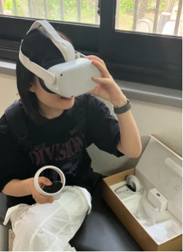
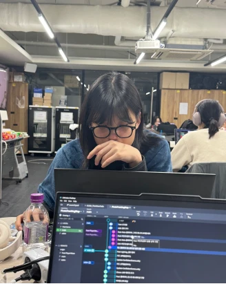
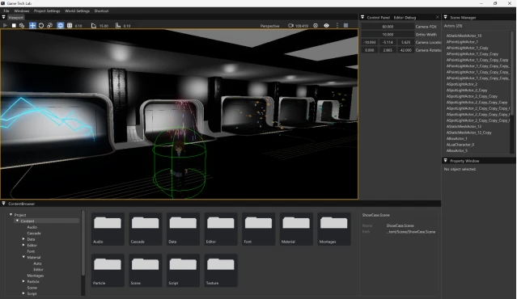
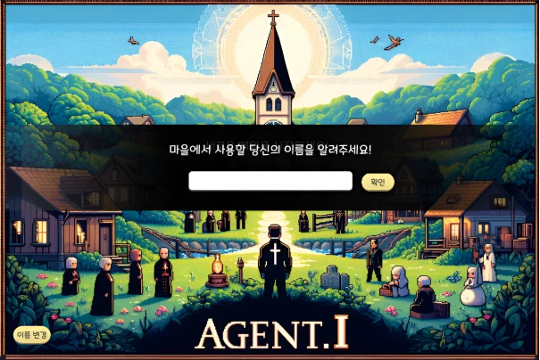
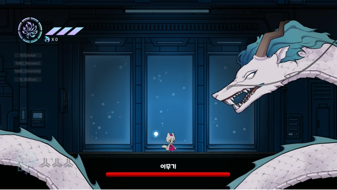
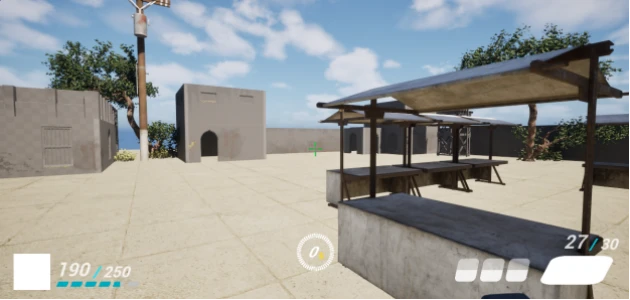
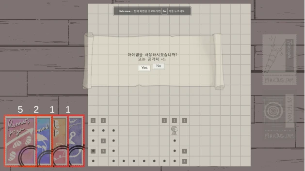

소통
혼자 고민하는 데 그치지 않고, 동료와 선배님에게 적극적으로 질문하며 배운 것을 나누는 상호 학습을 중요하게 생각합니다.
GAME CLIENT DEVELOPER
안녕하세요, 게임 클라이언트 개발자 성원희입니다.
Unity 게임 제작부터 자체 엔진 개발,
언리얼 엔진 플러그인 출시까지.
01 / ABOUT ME
끝없이 탐구하고 소통하는
개발자입니다.
혼자 고민하는 데 그치지 않고, 동료와 선배님에게 적극적으로 질문하며 배운 것을 나누는 상호 학습을 중요하게 생각합니다.
기술의 원리와 관련 지식에 끊임없이 호기심을 갖고 탐구하며, 현상에 대한 정확한 이해를 바탕으로 개발하는 개발자입니다.
쉽게 풀리지 않는 문제에도 포기하지 않고, 원인을 끝까지 파고들어 해결하는 사람입니다.



02 / TECH STACK
약 3년 동안 8개 이상의 Unity 게임 프로젝트에 참여한 경험을 통해, Unity 엔진 프레임워크를 이용하여 게임을 제작할 수 있습니다.
언리얼 엔진의 구조를 모방해 3D 자체 엔진을 제작하고, 언리얼 엔진 Fab에 플러그인을 출시한 경험을 통해 언리얼 엔진의 기본 동작 원리를 이해하고 Blueprint와 C++을 이용하여 게임을 제작할 수 있습니다.
Unity 엔진을 이용한 게임 프로젝트를 진행하며 C#의 문법을 익히고 사용할 수 있습니다.
Unreal 엔진과 코딩테스트에 사용하는 주언어로, C++ 문법과 STL을 익히고 사용할 수 있습니다.
Direct3D 11을 이용한 자체 엔진 제작과, 제작한 자체 엔진을 이용한 게임 제작 경험을 통해 DirectX의 API와 렌더링 파이프라인을 이해하고 활용할 수 있습니다.
03 / EDUCATION & AWARDS
졸업예정
Intermediate High (140)
우수상
대상
EXPERIENCE
이화여대 게임 제작 동아리 'KING' 활동
언리얼 엔진 Fab 플러그인 출시
크래프톤 정글 게임 테크랩 3기 수료
넥슨 주관 '2026 NDM 게임제작발표회' 참여
제 6회 'MaKING Jam' 참여
'UNIDEV' 주관 '2025 UNICON' 참여
크래프톤 멘토링 프로그램 '베터그라운드' 참여
제 5회 'MaKING Jam' 참여
넥슨 주관 '2024 NDM 게임제작발표회' 참여
제4회 메이킹잼 참여
'UNIDEV' 주관 '2023 UNICON' 참여
04 / SELECTED WORK — 11 PROJECTS
 01
01
02
03
04 05
05
06
07 08
08 09
09 10
10 11
11